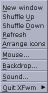

XFce version 3.4 (c) 1997-2000 Olivier Fourdan (fourdan@xfce.org)
Preamble
XFce version 3.4 (c) 1997-2000 Olivier Fourdan (fourdan@xfce.org)
Preamble
The XFce project was first started because I needed a simple, light and efficient environment for my Linux System.
There are now a lot of good environments and interfaces for Unix based systems, but most are either too heavy, too expensive or even both !
I wanted something easy to use and configure, stable, fast, and last but not least, visually appealing...
I believe that the desktop environment should increase user productivity. Therefore, the goal is to keep most system resources for the applications and not to consume all memory and CPU usage for what is used to display them.
From version to version, XFce has become more and more user configurable. As XFce is made for the user, it has to be very simple to configure. That's why everything is driven by the mouse, using buttons, drag and drop, etc., and the configuration files are hidden from the user, although they are plain text.

Typical XFce desktop
User Guide
The main panel

The functions of the main panel
are:
The clock has no special function,
except showing the date as a tooltip, while the icons are used to launch
applications. You can select an analog or digital clock by clicking
with the left mouse button on the clock.
To modify an icon on the main panel, or associate a command to an icon, click on the corresponding icon with the right mouse button.

To change the label of a virtual screen button, click on the button using the right mouse button :

Note : The number of virtual desktops is user configurable, from 2 to 10 desktops. See the configuration section later in this manual for more details.
On top of each icon, there is a little tiny arrow. Each of these buttons opens a popup menu.
Note : Some text based applications, such as "vi" require a terminal (xterm) to be opened. You can use the keyword "term" to start a terminal before running the command
e.g.:
Command line : term vi
Popup menus

Popup menus are another way of launching applications from the XFce panel.
Each entry is associated with an application that is launched when the menu entry is selected.
Drag and drop from various file managers (XFTree included, of course) is supported. For example, you can drag a C source file onto the X-Edit entry and xedit will be started and open the specified file.
The item on the top of the menu, called "Add icon...", is used to add new entries to menu. Drag and drop is also supported, but it does not trigger the same action. In fact, when you drop a file (preferably an executable) an entry is automatically added to the corresponding menu with a default icon. You can later change this icon by using the left mouse button.
The little tiny button at the bottom of the menu is only visible if the option "Use tear-off menu" is enabled. By clicking on this button you can "detach" the menu. Once a menu is detached you can move it around your screen and it stays opened even if an entry is selected, which is very convenient.

An existing entry can be modified by using the right mouse button :

Setup & parameters
As stated before, XFce is very intuitive. All customization can be performed through its graphical user interface.
For this purpose XFce provides a setup dialog with 4 tabfolders : "Palette", "XFce", "Windows" and "Startup".
Palette tabfolder
As XFce is based on the popular GTK+ toolkit, it uses the .gtkrc style hidden configuration file located in the user's directory. This enables all GTK+ applications to share the same color scheme. While .gtkrc is usually copied from a theme or written by hand, XFce is able to automatically generate the .gtkrc file from the color values and font selected by the user in the palette setup screen.
XFce is able to determine whether the .gtkrc file is customized by the user or not. If one wants to build his own .gtkrc style or if one uses a style from GNOME Control Center (gnomecc), XFce won't override it (as a result, if you curently have a .gtkrc file in your home directory and you want XFce to manage the style for you, you should remove or rename your current ~/.gtkrc file).
But if there is no .gtkrc file in user's home directory or if it is empty, XFce will generate a .gtkrc file so all GTK+ applications, including GNOME applications, will share exactly the same look.

A palette, from XFce's point of view, is made of 8 colors and a font name. Each color is used to display specific items in the XFce desktop: like the mouse pointer, the default window background, the text fields, etc.
The color you select for this palette are shared by all XFce aware applications (XFTree, XFClock, XFwm, etc.)
By clicking on one of the colors, you can change it using the color selector :

The palette can be saved to disk using the "Save..." button. You can retrieve it later using the "Load..." button.
You don't necessarily need to save your palette to disk unless you want to share it with other users. The current palette is automatically saved to a file in the user's home directory so that XFce will have the same color scheme when you restart it.
The font used for displaying text in XFce is selected in the XFce tabfolder.
XFce tabfolder

This dialog gives access to all
XFce options :
Notes :
1. The option "repaint root window" overrides any other application trying to use the root window. As a result, if you specify a backdrop in xfbd, XFce's backdrop manager, make sure you disable this option.
2. By changing the size of the icons, along with the number of popup menus available in XFce panel, you can adapt XFce to all types of screens including small screens.
Windows tabfolder
This tabfolder is for managing XFwm, the window manager, options.

The behavior of the windows can
be tuned by using the following options :
Startup tabfolder
Using the options from this screen you can adjust which XFce core modules (daemons/services) you want to start when XFce starts.

For example, if you don't want the pager to be launched on startup, just unselect the option. Beware that if a module is not started, the corresponding feature won't be enabled : If you don't start xfsound, you won't get any sound in XFce.
The Window Manager
XFwm is the window manager that comes with XFce.
It is fully integrated to the environment, providing a homogeneous interface with all XFce applications.
Moreover, XFwm is able to handle the most common window hints shared by popular applications such as Motif, SUN Openwindows, KDE and GNOME applications.
Most user options are handled through XFce setup and do not require any script customization (although you'll find a description of XFwm functions in the technical documentation of XFce).
Without any specific customization XFwm provides a set of built-in menus and functions.
Main menu
The main menu can be obtained by clicking on the root window with the right mouse button or by pressing [Alt+F2]

This menu provides an access to
the most common operations.

Window Menu
The window menu can be obtained by clicking on the root window with the middle mouse button (or both left and right button, if you have only 2 mouse buttons) or by pressing [Alt+F1]


Keyboard shortcuts
| Alt+Tab |
Switch application
(Next window)
|
| Alt+Tab |
Switch application
(Previous window)
|
| Shift+Alt+arrow keys |
Move pointer (fast)
|
| Shift+Ctrl+arrow keys |
Move pointer (slow)
|
| Alt+F1 |
Open window menu
|
| Alt+F2 |
Open main menu
|
| Alt+F3 |
Lower window
|
| Alt+F4 |
Close window
|
| Alt+F5 |
Next window
|
| Alt+F6 |
Previous window
|
| Alt+F7 |
Move window
|
| Alt+F8 |
Resize window
|
| Alt+F9 |
Iconify window
|
| Alt+F10 |
Maximize window
|
| Ctrl+F1 to F10 |
Switch to desktop
1 to 10
|
Mouse bindings

|
|
Click |
|
|
| Right | Single | Button 1 |
Open window's operations
menu
|
| Right | Double | Button 1 |
Close window
|
| Left | single | Button 1 |
Open window's operations
menu
|
| Right | Single | Button 3 |
Stick/unstick window
|
| Right | Single | Title bar |
Raise/move window
|
| Right | Double | Title bar |
Maximize window
|
| Left | Single | Title bar |
shade/unshade window
|
| Right | Single | Button 6 |
iconify window
|
| Left | Single | Button 6 |
iconify window
|
| Right | Single | Button 4 |
Maximize/un-maximize
window
|
| Left | Single | Button 4 |
Maximize/un-maximize
window
|
| Left | Single | Button 5 |
Shade/unshade window
|
| Right | Single | Button 5 |
Shade/unshade window
|
| Left | Single | Button 2 |
Close window
|
| Right | Single | Button 2 |
Close window
|
| Left | Single+Shift key | Button 2 |
Destroy window
|
| Right | Single+Shift key | Button 2 |
Destroy window
|
| Right | Single | Root window |
Open main menu
|
| Middle | Single | Root window |
Open window's operations
menu
|
| Left | Single | Root window |
Display list of running
applications
|
| Middle | Single | Window border |
Move window
|
| Right | Single+Shift key | Window border |
Move window
|
| Right | Single+Shift key | Window border |
Move window
|
The file Manager, XFTree
XFTree is a very simple file manager, which provides a graphical user interface to most common file operations.
XFTree supports drag and drop to itself, other GTK+ applications and, of course, the XFce panel.

Usage
Starting xftree will use the home directory as the default root if no directory is given as argument.

Drag and Drop: by default,
drag and drop copy the items. If [SHIFT] is pressed during drag, items
are moved instead of copied. The same way, pressing [CTRL+SHIFT] during
drag and drop will link the destination to the source (symbolic link).
Drag and drop of URL is allowed, e.g. from mozilla as long as CURL is available.
The corresponding file will be downloaded.
Keyboard shortcuts
| Alt+A |
select all items of
the selected directory.
|
| Alt+Shift+A |
Unselect all.
|
| Ctrl+A |
open the 'about' dialog.
|
| Alt+D |
duplicate the marked
file.
|
| Alt+Shift+D |
hide/show hidden files
(dotfiles).
|
| Alt+E |
empty the trash directory.
|
| Alt+F |
find files in the
current directory.
|
| Alt+G |
Go to selected directory
or ask the user if no directory entries are selected.
|
| Alt+H |
go to home directory.
|
| Alt+I |
properties / information
of selected items.
|
| Alt+J |
register an application
for a file name suffix.
|
| Alt+K |
create a new file.
|
| Alt+N |
create a new directory.
|
| Alt+Q |
quit the program.
|
| Alt+R |
rename selected file
/ directory.
|
| Alt+T |
open trash directory
in a new window.
|
| Alt+U |
go one directory up.
|
| Alt+W |
close current window.
|
| Ctrl+X |
delete selected items.
|
Other XFce tools
XFMouse
XFMouse is the mouse configurator. Thanks to XFMouse, you can change the mouse button mapping and other parameters

XFSound
XFSound is in charge of emitting a sound whenever an event occurs from the window manager. It is started automatically as a "module" at start-up.
When XFSound is started as a module (i.e. from XFce or XFwm using the keyword "Module") it just enters a loop that keeps on listening to the events coming from the Window Manager (XFwm)
Whenever a event occurs, XFSound will execute the user specified command intended to play actually the sound with the sound file corresponding to the event itself.
The user can interact with XFSound using the graphical interface by starting XFSound as a regular X application (i.e. not as a module).

XFPager
XFPager is a small tool that provides a miniature view of all XFwm desktops.
XFPager must be started as a module (i.e. from xfce panel or xfwm using the keyword "Module") to initiate the communication pipe with xfwm.
XFPager is able to receive and send events to windows running on each XFwm desktop. If you move a window on the screen, its image will be moved in XFPager, and if you move a window in the pager, the windows will be moved on the screen accordingly.
By default, XFPager will manage the default 10 screens of XFce, but it can also manage up to 32 screens !

XFbd
XFbd is a backdrop manager that displays image files on the root window, as a wallpaper (if XFce has been linked against IMLIB at compilation time, xfbd is able to use almost any kind of existing image format, ie png, gif, jpeg, bmp,tiff, etc. and scale them to fit the screen)

Please note that the use of xfbd avoids the use of the option "Repaint root window of workspace" in XFce setup screen and vice versa (both use the same root window...).
xfgnome
xfgnome is a module used for GNOME compatibility. If started, xfwm acts like a "GNOME compliant Window manager" and allow the use of GNOME applets such as GNOME pager. xfgnome module appeared in XFce 3.4.0
xfterm
xfterm is a small wrapper to be used as drag and drop action for the XFce/XFTree front panel.
The environment variableTERMCMD sets the 'terminal' command to be used. Usually'xterm'. The terminal emulation should support the "-e" option for executing commands
For example, to use rxvt as default terminal, add the following line to your $HOME/.xinitrc file prior to starting xfwm :
export TERMCMD=rxvt
Technical Documentation
Compilation
XFce 3.4 uses GNU autoconf and GNU automake to generate the makefiles.
As a result, configuration can be performed as simply as typing ./configure in XFce source directory !
Among all configuration options, you might be concerned with the following ones :
--prefix=<directory>
Specify the base directory where files will be installed (except XFce data)
--datadir=<directory>
Specify the directory where the data will be installed. The default is /usr/local/share. The data will be installed in <datadir>/xfce/
--sysconfdir=<directory>
Specify the base directory where the system-wide configuration files will be installed
--enable-nls/--disable-nls
enable/disable Native Language Support
--enable-dt/--disable-dt
enable/disable additional CDE configuration files. On systems using CDE, you can install additional configuration files that will provide an entry for XFce in dtlogin screen.
Once the configuration is over, run make and make install.
On Linux system, you might want to reduce the size of executables by doing a make install-strip.
This will discard all symbols from the program files (for example, xfce is 10 times smaller without the symbols)
Installation
XFce provides 2 convenient scripts for easy installation/configuration of XFce.
Run xfce_setup to set up replacement files in user's home directory. These files will fire up xfwm and xfce every time the user starts an X session (through startx or through xdm)
The previous configurations files are saved in a hidden directory .xfce_bckp/
Afterwards, one can use xfce_remove to restore the previous files.
The directory specified at configuration time for the data can be overridden afterwards by setting the environment variable XFCE_DATA to another directory.
E.g.
bash : export XFCE_DATA=/usr/local/share
csh : setenv XFCE_DATA /usr/local/share
As XFce supports Native Language Supports (NLS), make sure the environment variable LANG is correctly set for your country.
E.g.:
bash : export LANG="fr"
csh : setenv LANG "fr"
XFwm commands
| Function | Description | Example |
|---|---|---|
| ActiveColor <c1> <c2> (*) | Define color for active windows | ActiveColor #c0c0c0 #ffffff |
| AddToFunc <fn> | Begins or add to a function definition | AddToFunc Move-or-Raise "I" Raise
+ "M" Move + "D" Lower |
| AddToMenu <mn> | Begins or adds to a menu definition | AddToMenu "Utilities"
+ "Xterm" Exec xterm -e tcsh |
| AnimateWin | Enable or disable window's animations | AnimateWin On
AnimateWin Off |
| ArrangeIcons [<desk1> <desk2>] (*) | Arrange icons on current desk or on desk <desk1> to <desk2> | ArrangeIcons 0 9 |
| AutoRaise (*) | Enable or disable autoraise of windows (when FocusMode is set to FollowMouse) | AutoRaise On
AutoRaise Off |
| Beep | Make the computer beep | Beep |
| BitmapButtons <Y/N> | Togble bitmap/vector buttons on the title bar | BitmapButtons Yes |
| ClickTime <ct> | Specifies the maximum delay (in milliseconds) between a button press and a button release | ClickTime 150 |
| Close | Close the current window | Close |
| ColormapFocus | Colormap is assigned to the window that has the focus | ColormapFocus |
| CursorColor <c1> <c2> (*) | Define mouse cursor colors | CursorColor red white |
| CursorMove <n1> <n2> | Moves the cursor of n1% of screen vertically and n2% of screen horizontally | CursorMove 10 10 |
| Delete | Sends a message to a window asking that it remove itself | Delete |
| Desk <d1> [<d2>] (*) | Change to another desk/workspace | Desk <0 |
| DesktopSize <Hor><Ver> | Defines the virtual desktop size in units of physical screen size. | DesktopSize 4x1 |
| Destroy | Destroys an application window | Destroy |
| DestroyFunc <fn> | Removes an unneeded function | DestroyFunc "Move-or-Raise" |
| DestroyMenu <mn> | Removes an unneeded menu | DestroyMenu "Utilities" |
| Echo <s> | Prints a string to stderr | Echo "Done" |
| Exec <c> | Executes a command | exec xedit |
| ExecUseSHELL <c> | Defines a shell as default for Exec | ExecUseSHELL bash |
| FlipFocus | Toggle focus between the last two focused windows | FlipFocus |
| Focus | Gives focus to a window | Focus |
| FocusMode (*) | Defines focus mode | FocusMode ClickToFocus
FocusMode FollowMouse |
| Function <fn> | Binds a function to a mouse or a key | Mouse 1 T A Function Move-or-Raise |
| GotoPage <x> <y> | Moves viewport to page (x,y) | GotoPage 3 2 |
| IconFont <font> (*) | Defines font used to display icons | IconFont -*-helvetica-medium-r-*-*-12-*-*-*-*-*-*-* |
| IconGrid | Set icon grid size | IconGrid 10 |
| IconSpacing | Set icon spacing | IconSpacing 5 |
| Iconify | Iconify/Deiconify a window | Iconify |
| Iconpos <pos> (*) | Set the position of icons (pos can be "top", "left", bottom" or "right") | Iconpos top |
| InactiveColor <c1> <c2> (*) | Defines colors for inactive windows | InactiveColors grey77 black |
| Key <key> <context> <modif> <fn> | Binds a keyboard key to a specified functions | Key F11 A SCM WindowList |
| KillModule <m> | Kills a module | KillModule xfce |
| Lower | Lowers a window | Lower |
| Maximize | Maximizes a window | Maximize |
| Menu <m> <dbl-click-action> | Displays menu <m or triggers action if user performed a double click | Menu "Utilities" Close |
| MenuColor <c1> <c2> <c3> <c4> (*) | Defines colors for menus | MenuColor red blue yellow green |
| MenuFont <font> | Defines menu font | MenuFont
-*-helvetica-medium-r-*-*-12-*-*-*-*-*-*-* |
| Module <m> | Executes a module | Module xfce |
| ModulePath | Set Module path | ModulePath $PATH |
| Mouse <mouse> <context> <modif> <fn> | Binds a mouse button to a specified function | Mouse 1 R A Menu "Root" Nop |
| Move [<x> <y>] | Moves a window | Move |
| Nop | Does nothing | Nop |
| OpaqueMove (*) | If set, XFwm displays the contents of window during move | OpaqueMove On
OpaqueMove Off |
| OpaqueResize (*) | If set, XFwm displays the contents of window during resize | OpaqueResize On
OpaqueResize Off |
| PopUp | Popup a menu or a submenu | Popup "Quit" |
| Quit | Ends XFce | Quit |
| Raise | Raises a window | Raise |
| RaiseLower | Raises or lowers a window | RaiseLower |
| Recapture | Recapture all windows | Recapture |
| Refresh | Refreshes the screen | Refresh |
| Resize [<x <y] | Resizes a window | Resize |
| Restart | Restarts XFwm | Restart |
| SessionManagement | Enable/Disable builtin session management | SessionManagement On |
| Shade | Shade/unshade a window | Shade |
| ShowButtons <Side> <n> | Set the number of buttons shown on the title bar | ShowButtons Left 1 ShowButtons Right 3 |
| Snapsize <n> (*) | Sets the size (in pixels) for windows snapping | Snapsize 20 |
| Stick | Makes a window sticky | Stick |
| Style <win> <s1> [,<s2> [,<s3> [<s4>]...]] | Gives a style to one or several windows | Style "XFce*" Sticky |
| TitleStyle <type> Gradient <c1> <c2>
(*)
TitleStyle <type> Solid <c> (*) |
Defines title bar style | TitleStyle Active Gradient blue grey77
TitleStyle Inactive Solid grey60 |
| Wait <name> | Waits until window <name> appears | Wait xterm |
| WaitSession <n> | Delay startup of session management (in seconds) | WaitSession 10 |
| WindowFont (*) | Defines font for window titles | WindowFont -*-helvetica-bold-r-*-*-12-*-*-*-*-*-*-* |
| WindowList | Gives a list a all windows displayed on screen | Windowlist |
| XORvalue <n> | Changes the value with which bits are XOR'ed when doing rubber-band window resizing | XORvalue 65535 |
Note : (*) denotes parameters overridden by XFce at start-up.
Advanced configuration options for xfwm
Some options such as keyboard shortcuts or user defined menus can be tweaked using .xfwmrc configuration file.
Preparing the configuration file
The first step is to copy the sample configuration file to your home directory :
cp /etc/X11/xfce/xfwmrc $HOME/.xfwmrc
Adding new entries/submenus to the root menu
If you wish to add new entries to the existing root menu,
add the following lines to tour $HOME/.xfwmrc file :
Removing existing keyboard shortcuts
Some applications require specific keyboard shortcuts, that can interfere with xfwm shortcuts.
To remove the default existing keyboard shortcuts defined
in xfwm, add the following lines to your $HOME/.xfwmrc :
Recognized contexts :
for example, IW is for Icon and Window, N is for no
modifier pressed during operation.
Copyright (C) 1997-2000 Olivier Fourdan (fourdan@xfce.org)
- xfce, xfclock, xfbd, xfmouse & xfsound are written by :
Olivier Fourdan (fourdan@xfce.org)
- XFTree is based on xtree from :
Rasca Gmelch <thron@gmx.de>
- xfwm and xfpager are based on fvwm and fvwm2 from :
Robert Nation Charles Hines
This program is free software; you can redistribute it and/or modify it under the terms of the GNU General Public License as published by the Free Software Foundation; either version 2 of the License, or (at your option) any later version.
This program is distributed in the hope that it will be useful, but WITHOUT ANY WARRANTY; without even the implied warranty of MERCHANTABILITY or FITNESS FOR A PARTICULAR PURPOSE. See the GNU General Public License for more details.
You should have received a copy of the GNU General Public License along with this program; if not, write to the Free Software Foundation, Inc., 59 Temple Place - Suite 330, Boston, MA 02111-1307, USA.
GNU GENERAL PUBLIC LICENSE
Version 2, June 1991
Copyright (C) 1989, 1991 Free Software Foundation, Inc.
59 Temple Place, Suite 330, Boston, MA
02111-1307 USA
Everyone is permitted to copy and distribute verbatim copies of this license document, but changing it is not allowed.
Preamble
The licenses for most software are designed to take away your freedom to share and change it. By contrast, the GNU General Public License is intended to guarantee your freedom to share and change free software--to make sure the software is free for all its users. This General Public License applies to most of the Free Software Foundation's software and to any other program whose authors commit to using it. (Some other Free Software Foundation software is covered by the GNU Library General Public License instead.) You can apply it to your programs, too.
When we speak of free software, we are referring to freedom, not price. Our General Public Licenses are designed to make sure that you have the freedom to distribute copies of free software (and charge for this service if you wish), that you receive source code or can get it if you want it, that you can change the software or use pieces of it in new free programs; and that you know you can do these things.
To protect your rights, we need to make restrictions that forbid anyone to deny you these rights or to ask you to surrender the rights. These restrictions translate to certain responsibilities for you if you distribute copies of the software, or if you modify it.
For example, if you distribute copies of such a program, whether gratis or for a fee, you must give the recipients all the rights that you have. You must make sure that they, too, receive or can get the source code. And you must show them these terms so they know their rights.
We protect your rights with two steps: (1) copyright the software, and (2) offer you this license which gives you legal permission to copy, distribute and/or modify the software.
Also, for each author's protection and ours, we want to make certain that everyone understands that there is no warranty for this free software. If the software is modified by someone else and passed on, we want its recipients to know that what they have is not the original, so that any problems introduced by others will not reflect on the original authors' reputations.
Finally, any free program is threatened constantly by software patents. We wish to avoid the danger that redistributors of a free program will individually obtain patent licenses, in effect making the program proprietary. To prevent this, we have made it clear that any patent must be licensed for everyone's free use or not licensed at all.
The precise terms and conditions for copying, distribution and modification follow.
GNU GENERAL PUBLIC LICENSE
TERMS AND CONDITIONS FOR COPYING, DISTRIBUTION AND MODIFICATION
0. This License applies to any program or other work which contains a notice placed by the copyright holder saying it may be distributed under the terms of this General Public License. The "Program", below, refers to any such program or work, and a "work based on the Program" means either the Program or any derivative work under copyright law: that is to say, a work containing the Program or a portion of it, either verbatim or with modifications and/or translated into another language. (Hereinafter, translation is included without limitation in the term "modification".) Each licensee is addressed as "you".
Activities other than copying, distribution and modification are not covered by this License; they are outside its scope. The act of running the Program is not restricted, and the output from the Program is covered only if its contents constitute a work based on the Program (independent of having been made by running the Program). Whether that is true depends on what the Program does.
1. You may copy and distribute verbatim copies of the Program's source code as you receive it, in any medium, provided that you conspicuously and appropriately publish on each copy an appropriate copyright notice and disclaimer of warranty; keep intact all the notices that refer to this License and to the absence of any warranty; and give any other recipients of the Program a copy of this License along with the Program.
You may charge a fee for the physical act of transferring a copy, and you may at your option offer warranty protection in exchange for a fee.
2. You may modify your copy or copies of the Program or any portion of it, thus forming a work based on the Program, and copy and distribute such modifications or work under the terms of Section 1 above, provided that you also meet all of these conditions:
a) You must cause the modified files to carry prominent notices stating that you changed the files and the date of any change.
b) You must cause any work that you distribute or publish, that in whole or in part contains or is derived from the Program or any part thereof, to be licensed as a whole at no charge to all third parties under the terms of this License.
c) If the modified program normally reads commands interactively when run, you must cause it, when started running for such interactive use in the most ordinary way, to print or display an announcement including an appropriate copyright notice and a notice that there is no warranty (or else, saying that you provide a warranty) and that users may redistribute the program under these conditions, and telling the user how to view a copy of this License. (Exception: if the Program itself is interactive but does not normally print such an announcement, your work based on the Program is not required to print an announcement.)
These requirements apply to the modified work as a whole. If identifiable sections of that work are not derived from the Program, and can be reasonably considered independent and separate works in themselves, then this License, and its terms, do not apply to those sections when you distribute them as separate works. But when you distribute the same sections as part of a whole which is a work based on the Program, the distribution of the whole must be on the terms of this License, whose permissions for other licensees extend to the entire whole, and thus to each and every part regardless of who wrote it.
Thus, it is not the intent of this section to claim rights or contest your rights to work written entirely by you; rather, the intent is to exercise the right to control the distribution of derivative or collective works based on the Program.
In addition, mere aggregation of another work not based on the Program with the Program (or with a work based on the Program) on a volume of a storage or distribution medium does not bring the other work under the scope of this License.
3. You may copy and distribute the Program (or a work based on it, under Section 2) in object code or executable form under the terms of Sections 1 and 2 above provided that you also do one of the following:
a) Accompany it with the complete corresponding machine-readable source code, which must be distributed under the terms of Sections 1 and 2 above on a medium customarily used for software interchange; or,
b) Accompany it with a written offer, valid for at least three years, to give any third party, for a charge no more than your cost of physically performing source distribution, a complete machine-readable copy of the corresponding source code, to be distributed under the terms of Sections 1 and 2 above on a medium customarily used for software interchange; or,
c) Accompany it with the information you received as to the offer to distribute corresponding source code. (This alternative is allowed only for noncommercial distribution and only if you received the program in object code or executable form with such an offer, in accord with Subsection b above.)
The source code for a work means the preferred form of the work for making modifications to it. For an executable work, complete source code means all the source code for all modules it contains, plus any associated interface definition files, plus the scripts used to control compilation and installation of the executable. However, as a special exception, the source code distributed need not include anything that is normally distributed (in either source or binary form) with the major components (compiler, kernel, and so on) of the operating system on which the executable runs, unless that component itself accompanies the executable.
If distribution of executable or object code is made by offering access to copy from a designated place, then offering equivalent access to copy the source code from the same place counts as distribution of the source code, even though third parties are not compelled to copy the source along with the object code.
4. You may not copy, modify, sublicense, or distribute the Program except as expressly provided under this License. Any attempt otherwise to copy, modify, sublicense or distribute the Program is void, and will automatically terminate your rights under this License. However, parties who have received copies, or rights, from you under this License will not have their licenses terminated so long as such parties remain in full compliance.
5. You are not required to accept this License, since you have not signed it. However, nothing else grants you permission to modify or distribute the Program or its derivative works. These actions are prohibited by law if you do not accept this License. Therefore, by modifying or distributing the Program (or any work based on the Program), you indicate your acceptance of this License to do so, and all its terms and conditions for copying, distributing or modifying the Program or works based on it.
6. Each time you redistribute the Program (or any work based on the Program), the recipient automatically receives a license from the original licensor to copy, distribute or modify the Program subject to these terms and conditions. You may not impose any further restrictions on the recipients' exercise of the rights granted herein. You are not responsible for enforcing compliance by third parties to this License.
7. If, as a consequence of a court judgment or allegation of patent infringement or for any other reason (not limited to patent issues), conditions are imposed on you (whether by court order, agreement or otherwise) that contradict the conditions of this License, they do not excuse you from the conditions of this License. If you cannot distribute so as to satisfy simultaneously your obligations under this License and any other pertinent obligations, then as a consequence you may not distribute the Program at all. For example, if a patent license would not permit royalty-free redistribution of the Program by all those who receive copies directly or indirectly through you, then the only way you could satisfy both it and this License would be to refrain entirely from distribution of the Program.
If any portion of this section is held invalid or unenforceable under any particular circumstance, the balance of the section is intended to apply and the section as a whole is intended to apply in other circumstances.
It is not the purpose of this section to induce you to infringe any patents or other property right claims or to contest validity of any such claims; this section has the sole purpose of protecting the integrity of the free software distribution system, which is implemented by public license practices. Many people have made generous contributions to the wide range of software distributed through that system in reliance on consistent application of that system; it is up to the author/donor to decide if he or she is willing to distribute software through any other system and a licensee cannot impose that choice.
This section is intended to make thoroughly clear what is believed to be a consequence of the rest of this License.
8. If the distribution and/or use of the Program is restricted in certain countries either by patents or by copyrighted interfaces, the original copyright holder who places the Program under this License may add an explicit geographical distribution limitation excluding those countries, so that distribution is permitted only in or among countries not thus excluded. In such case, this License incorporates the limitation as if written in the body of this License.
9. The Free Software Foundation may publish revised and/or new versions of the General Public License from time to time. Such new versions will be similar in spirit to the present version, but may differ in detail to address new problems or concerns.
Each version is given a distinguishing version number. If the Program specifies a version number of this License which applies to it and "any later version", you have the option of following the terms and conditions either of that version or of any later version published by the Free Software Foundation. If the Program does not specify a version number of this License, you may choose any version ever published by the Free Software Foundation.
10. If you wish to incorporate parts of the Program into other free programs whose distribution conditions are different, write to the author to ask for permission. For software which is copyrighted by the Free Software Foundation, write to the Free Software Foundation; we sometimes make exceptions for this. Our decision will be guided by the two goals of preserving the free status of all derivatives of our free software and of promoting the sharing and reuse of software generally.
NO WARRANTY
11. BECAUSE THE PROGRAM IS LICENSED FREE OF CHARGE, THERE IS NO WARRANTY FOR THE PROGRAM, TO THE EXTENT PERMITTED BY APPLICABLE LAW. EXCEPT WHEN OTHERWISE STATED IN WRITING THE COPYRIGHT HOLDERS AND/OR OTHER PARTIES PROVIDE THE PROGRAM "AS IS" WITHOUT WARRANTY OF ANY KIND, EITHER EXPRESSED OR IMPLIED, INCLUDING, BUT NOT LIMITED TO, THE IMPLIED WARRANTIES OF MERCHANTABILITY AND FITNESS FOR A PARTICULAR PURPOSE. THE ENTIRE RISK AS TO THE QUALITY AND PERFORMANCE OF THE PROGRAM IS WITH YOU. SHOULD THE PROGRAM PROVE DEFECTIVE, YOU ASSUME THE COST OF ALL NECESSARY SERVICING, REPAIR OR CORRECTION.
12. IN NO EVENT UNLESS REQUIRED BY APPLICABLE LAW OR AGREED TO IN WRITING WILL ANY COPYRIGHT HOLDER, OR ANY OTHER PARTY WHO MAY MODIFY AND/OR REDISTRIBUTE THE PROGRAM AS PERMITTED ABOVE, BE LIABLE TO YOU FOR DAMAGES, INCLUDING ANY GENERAL, SPECIAL, INCIDENTAL OR CONSEQUENTIAL DAMAGES ARISING OUT OF THE USE OR INABILITY TO USE THE PROGRAM (INCLUDING BUT NOT LIMITED TO LOSS OF DATA OR DATA BEING RENDERED INACCURATE OR LOSSES SUSTAINED BY YOU OR THIRD PARTIES OR A FAILURE OF THE PROGRAM TO OPERATE WITH ANY OTHER PROGRAMS), EVEN IF SUCH HOLDER OR OTHER PARTY HAS BEEN ADVISED OF THE POSSIBILITY OF SUCH DAMAGES.
END OF TERMS AND CONDITIONS
How to Apply These Terms to Your New Programs
If you develop a new program, and you want it to be of the greatest possible use to the public, the best way to achieve this is to make it free software which everyone can redistribute and change under these terms.
To do so, attach the following notices to the program. It is safest to attach them to the start of each source file to most effectively convey the exclusion of warranty; and each file should have at least the "copyright" line and a pointer to where the full notice is found.
<one line to give the program's name and a brief idea of what it does.>
Copyright (C) <year> <name of author>
This program is free software; you can redistribute it and/or modify it under the terms of the GNU General Public License as published by the Free Software Foundation; either version 2 of the License, or (at your option) any later version.
This program is distributed in the hope that it will be useful, but WITHOUT ANY WARRANTY; without even the implied warranty of MERCHANTABILITY or FITNESS FOR A PARTICULAR PURPOSE. See the GNU General Public License for more details.
You should have received a copy of the GNU General Public License along with this program; if not, write to the Free Software Foundation, Inc., 59 Temple Place, Suite 330, Boston, MA 02111-1307 USA
Also add information on how to contact you by electronic and paper mail.
If the program is interactive, make it output a short notice like this when it starts in an interactive mode:
Gnomovision version 69, Copyright (C) year name of author Gnomovision comes with ABSOLUTELY NO WARRANTY; for details type `show w'. This is free software, and you are welcome to redistribute it under certain conditions; type `show c' for details.
The hypothetical commands `show w' and `show c' should show the appropriate parts of the General Public License. Of course, the commands you use may be called something other than `show w' and `show c'; they could even be mouse-clicks or menu items--whatever suits your program.
You should also get your employer (if you work as a programmer) or your school, if any, to sign a "copyright disclaimer" for the program, if necessary. Here is a sample; alter the names:
Yoyodyne, Inc., hereby disclaims all copyright interest in the program `Gnomovision' (which makes passes at compilers) written by James Hacker.
<signature of Ty Coon>, 1 April 1989 Ty Coon, President of Vice
This General Public License does not permit incorporating your program into proprietary programs. If your program is a subroutine library, you may consider it more useful to permit linking proprietary applications with the library. If this is what you want to do, use the GNU Library General Public License instead of this License.